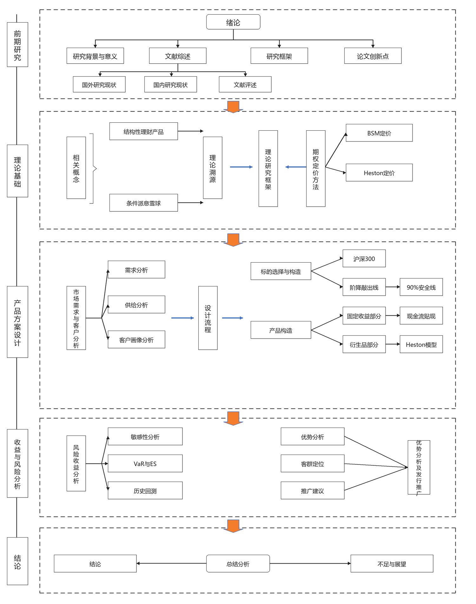

情景一
提前结束
如果指数在某个观察月达到当期的阶梯敲出线，产品可能在中途结束。
这意味着：产品不一定会持有满一年，较好的市场表现反而可能让它更早结束。
这一页把原本抽象的收益逻辑和图表说明合在一起。 对普通投资者来说，看懂产品最有效的方式不是先学术语，而是先知道“市场如果这样走，我大概会面对什么结果”。
如果指数在某个观察月达到当期的阶梯敲出线，产品可能在中途结束。
这意味着：产品不一定会持有满一年，较好的市场表现反而可能让它更早结束。
如果一年里都没有触发不利条件，也没有提前结束，产品就会按完整周期结算。
这意味着：这类结构在震荡或温和波动的环境里，通常更容易被解释成“拿时间换条件收益”。
市场中途出现较大下跌，并不一定自动等于最差结局。关键要看是否跌破敲入线，以及到期时有没有回到安全区间。
这意味着：产品最难理解的部分，往往就在“曾经跌过”与“最后落点”之间的差别。

如果市场持续明显走弱，到期仍落在安全线下方，那么产品的下行风险就会真正暴露出来。
这里也是网站必须单独做风险提示页的原因：最坏结果不能只放在注脚里。
这意味着：安全垫是缓冲，不是消失风险的开关。
这类产品看的不是“最后涨了多少”这么简单，而是整段路径有没有触发关键条件。
请同时看毛收益和净收益，不要只看票息数字。
请继续去风险提示页，因为“安全线”和“保本率”这两个词最容易被误解。